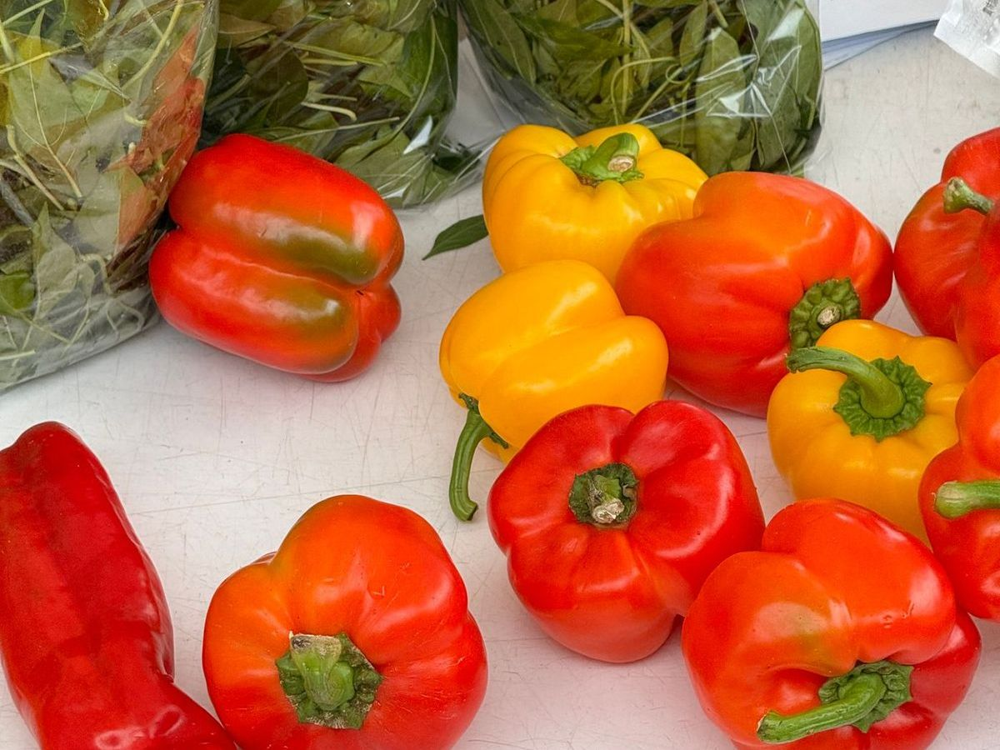
野菜・果物
朝、それぞれの畑で採れたばかりの野菜と、季節の果物。袋にはつくった人の名前が書いてあります。ときどき、珍しい果物に出会えることも。
店
南関から和水・山鹿へ向かう道沿い。朝採りの野菜と果物、お米、苗もの、加工品、パン。買ったものをその場で味わえるイートインコーナーもあります。
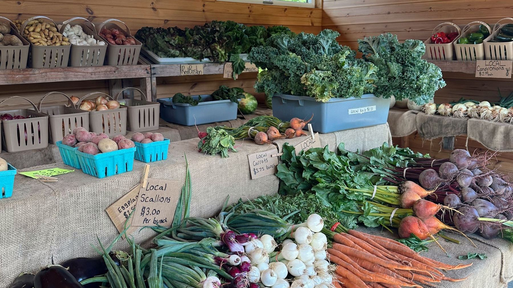
品
その日の畑しだいで、顔ぶれは変わります。だいたいこんなものが並んでいます、というご紹介です。

朝、それぞれの畑で採れたばかりの野菜と、季節の果物。袋にはつくった人の名前が書いてあります。ときどき、珍しい果物に出会えることも。
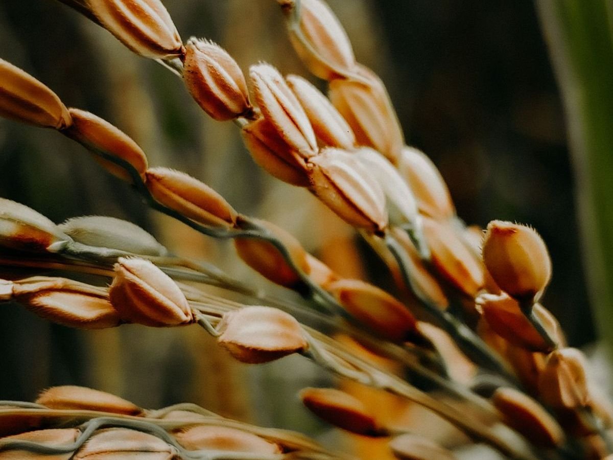
朝晩の寒暖差ときれいな水に育てられた南関のお米。新米の季節には、いちばん人気の棚になります。
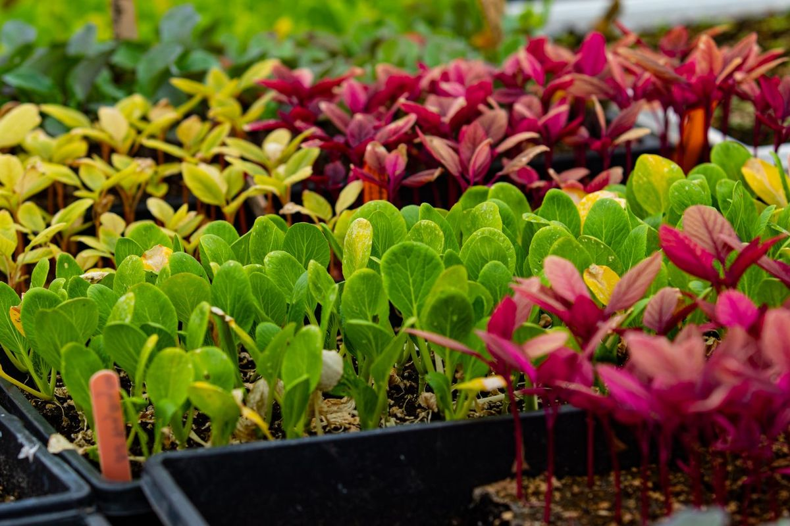
春には夏野菜の苗、秋には冬野菜の苗。季節の花も並びます。家の庭やプランターで、畑の続きをどうぞ。
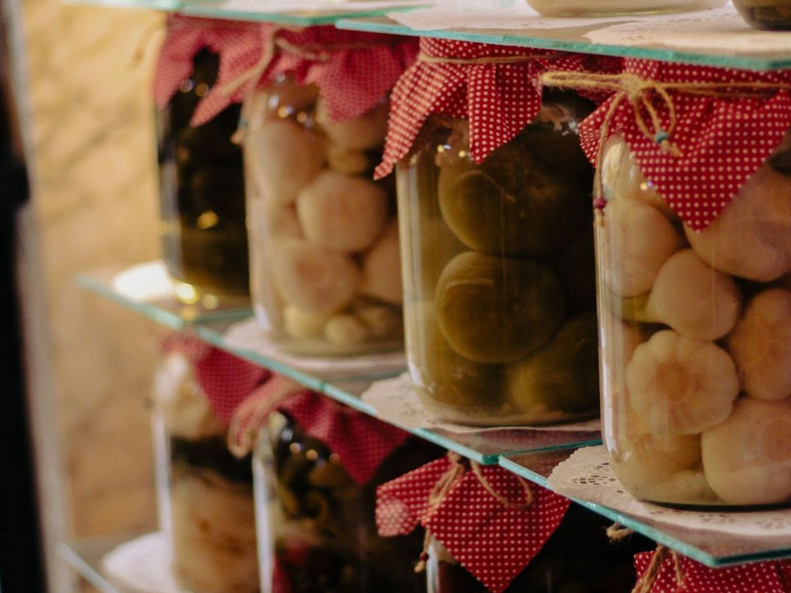
漬物や味噌、お菓子など、農家の台所から生まれた手づくりの品々。お土産にも喜ばれます。
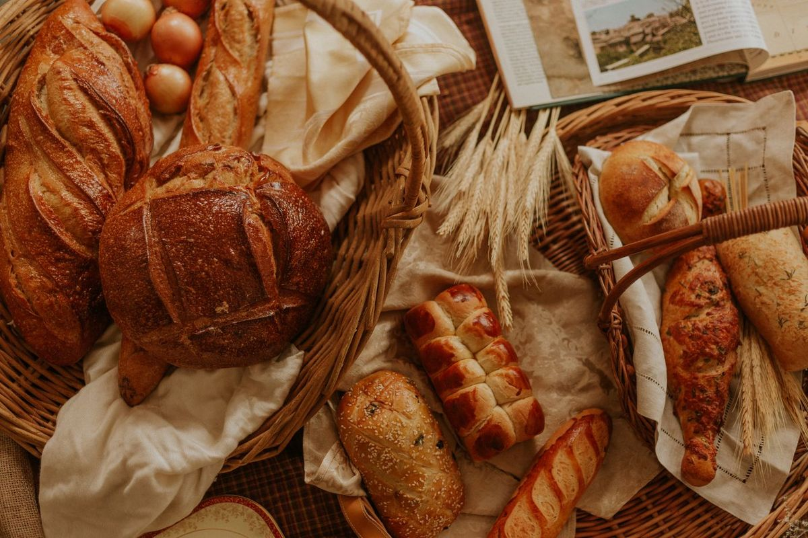
お客さまからも評判のパン。野菜と一緒に、朝ごはんや昼ごはんの買い出しにどうぞ。
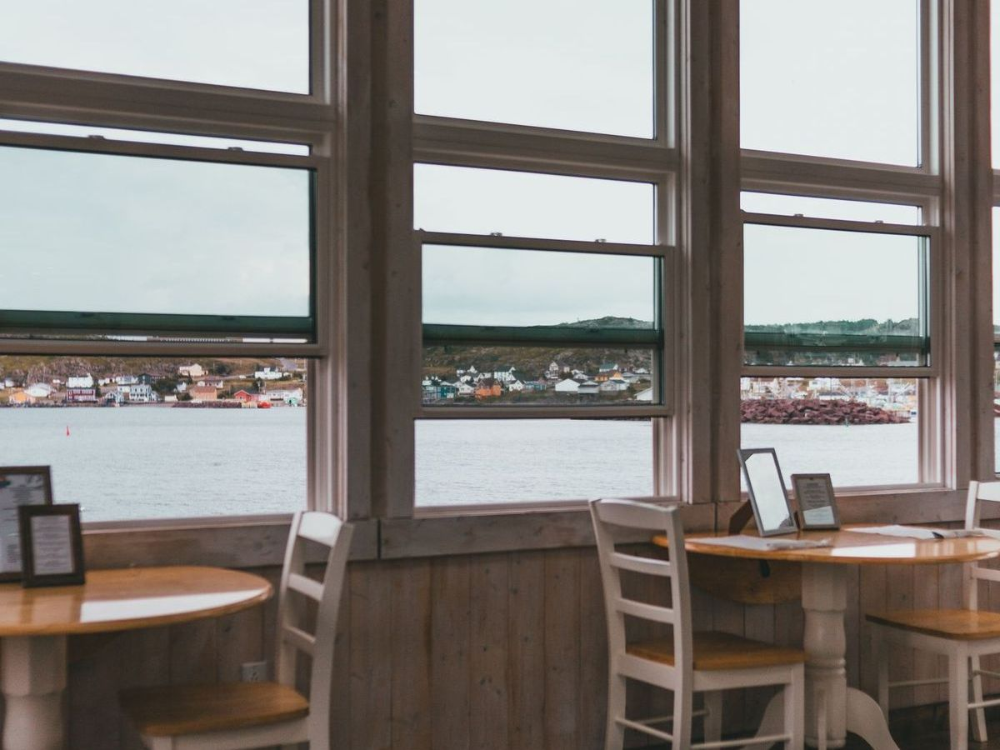
買ったものを、その場で。ドライブの途中に立ち寄って、ひと息つける休憩スペースです。
棚
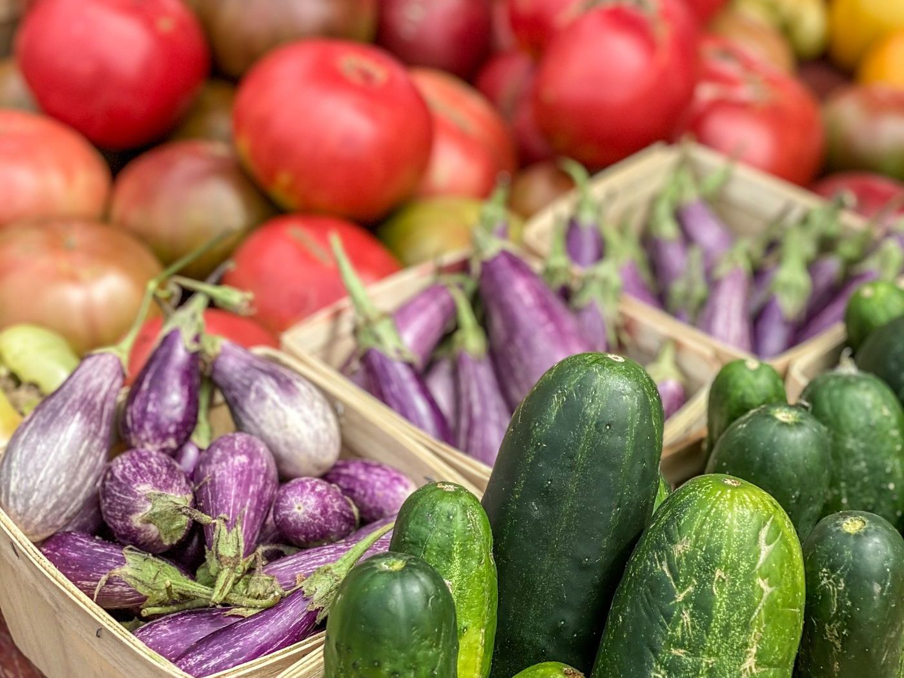
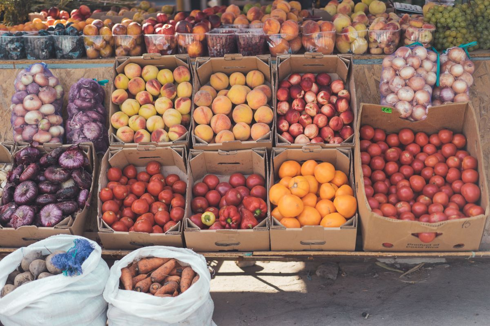
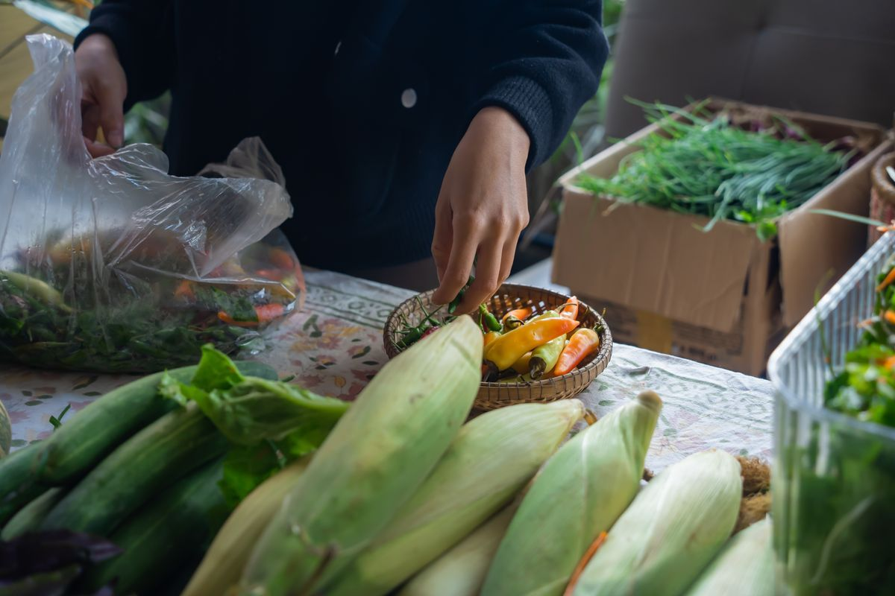
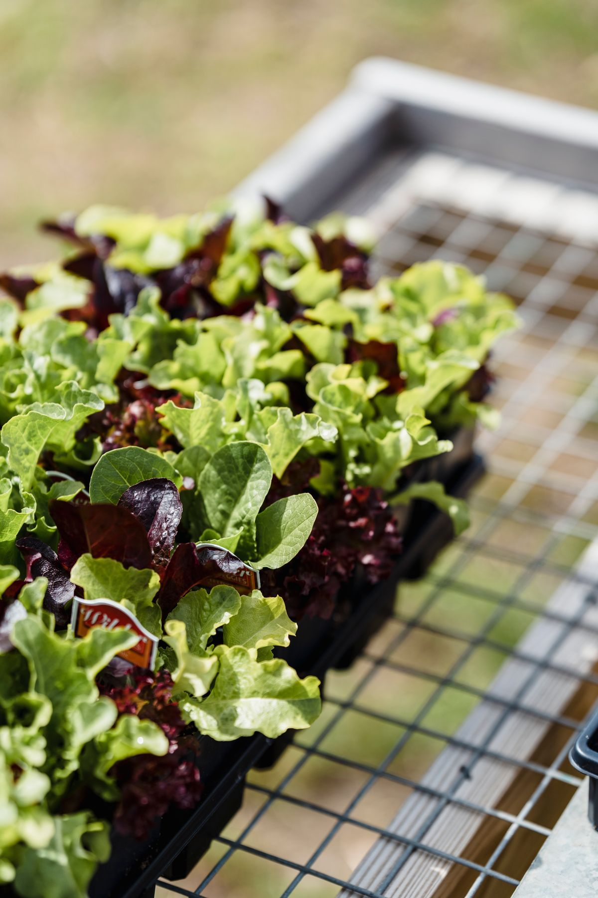
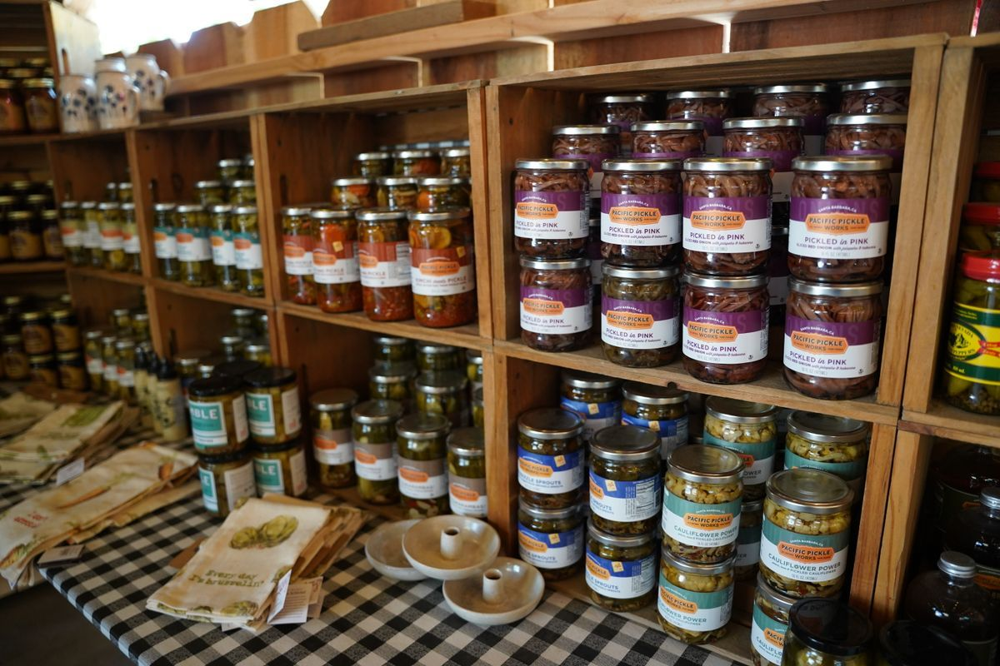
買い物だけで終わらせない。ドライブの途中に立ち寄って、買ったものをその場で食べて、少し休んでから、また出発する。そんな使い方をしてもらえるように、休憩スペースやトイレ、電気自動車の充電設備も用意しています。
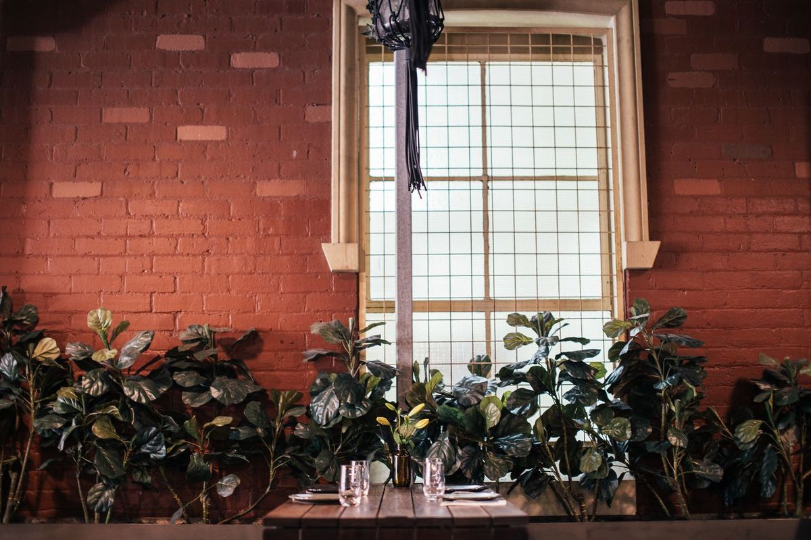
人気の野菜や果物は、午前中に売り切れてしまうことがあります。いちばんにぎやかな棚を見たい方は、開店直後にどうぞ。
天候や収穫の状況で、その日に並ぶものは変わります。お目当てのものがある場合は、お電話でご確認ください。
週末やお昼どきは駐車場が混み合うことがあります。ご不便をおかけしますが、ゆずりあってのご利用をお願いします。
道
| 店名 | やさい畑 |
|---|---|
| 住所 | 〒861-0811 熊本県玉名郡南関町大字小原674-1 |
| 電話 | 0968-53-3399 |
| 営業時間 | 9:00〜19:00※ 季節や仕入れ状況により変わることがあります。 |
| 定休日 | お電話にてご確認ください |
| 設備 | 駐車場／EV充電設備／休憩スペース／トイレ／イートインコーナー |
| 運営 | 南関町の地元農家のみなさん |
思
野菜の向こうに、つくる人がいます。
やさい畑に出荷する農家の言葉を、書に託しました。